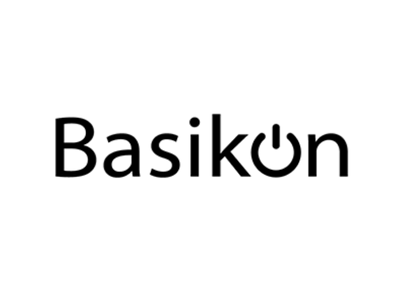
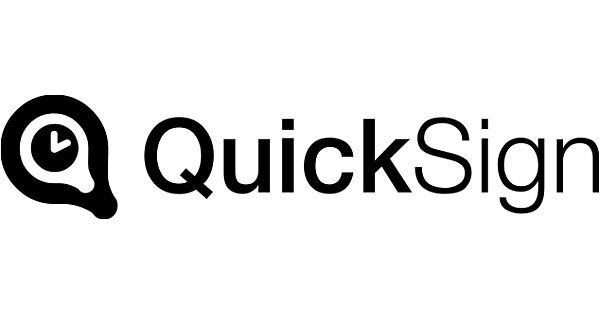

Chaque dossier frauduleux détecté dans l’écosystème renforce la protection de tous ses membres. Plus le réseau grandit, plus la fraude recule.


Vos équipes détectent. Notre IA corrèle. Le réseau alerte. Chaque signal devient une défense pour l’ensemble de l’écosystème.
Quatre fronts sur lesquels nos membres reculent la fraude, ensemble.
Notre IA analyse en temps réel les schémas de fraude observés sur l’ensemble du réseau, et alerte chaque membre avant que le préjudice ne se reproduise.
En savoir plusChaque dossier signalé enrichit le modèle. La détection s’affine en continu, sans paramétrage manuel. Plus le réseau grandit, plus il est précis.
Réservez une démonstration personnalisée. Découvrez comment l’intelligence collective peut protéger votre organisation. Sans engagement.